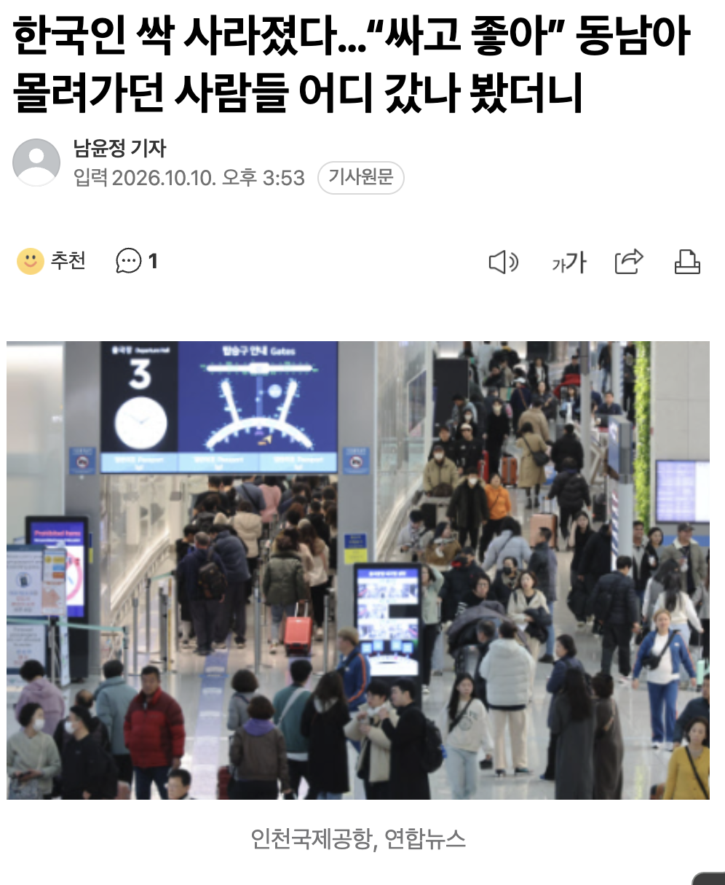
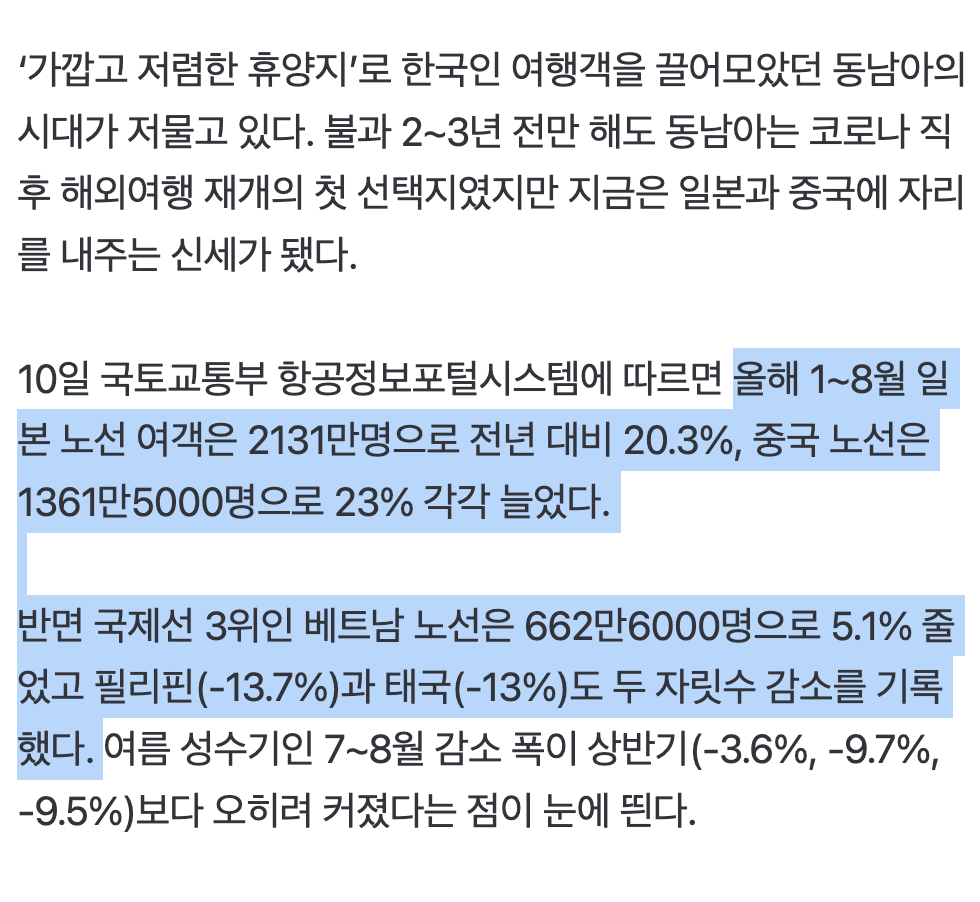
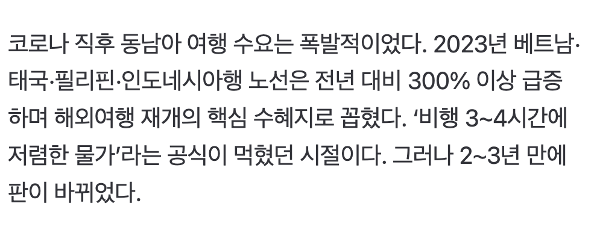
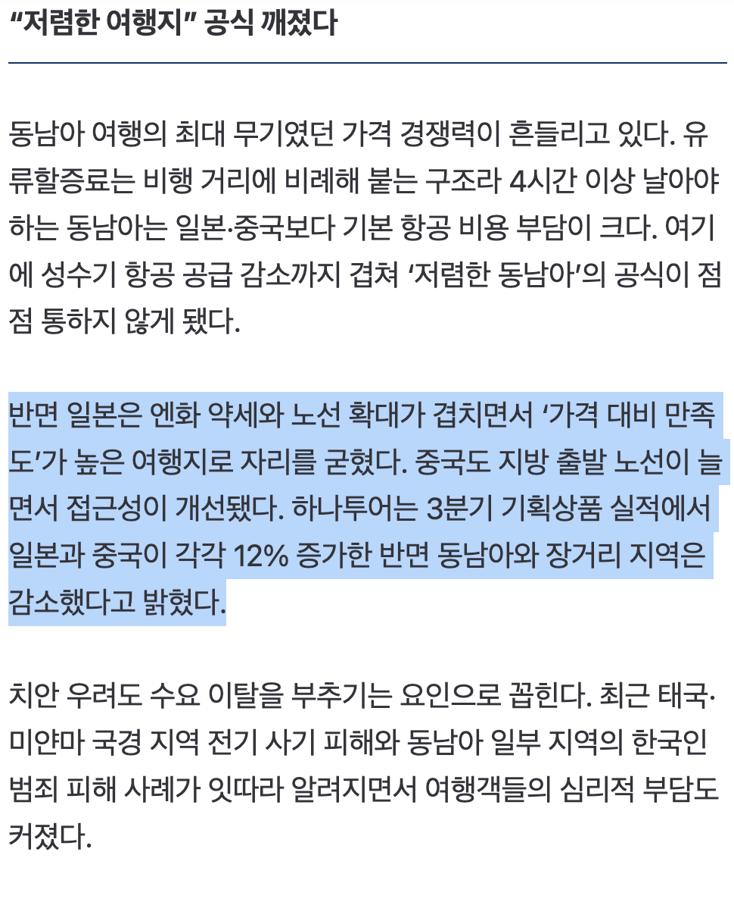

https://n.news.naver.com/article/011/0004669851?cds=news_media_pc




https://n.news.naver.com/article/011/0004669851?cds=news_media_pc
동남아 너무 좋아하는데 혼자 가거나 동성친구랑 간다하면 영포티 행님들이 음흉한 미소를 짓더라고
좆같아서 안감
나도 회사에서 여행가냐하면 동남아라 얘기안함 ㅋㅋㅋ 한 번 얘기했다가 시이벌 뭔 후기알려달라고
좀 유흥의 이미지가 있긴 하지
영포티행님들한테 오해받는게 싫어서 안가냐 ㅋㅋ
그새끼들이 지들만 오해하고 말았으면 나도 갔지 시발
영포티 형님들 미소 때문에 안 가는거면 동남아 너무 좋아하는건 맞냐? ㅋㅋㅋ
남 눈치 보느라 쩔쩔매는 사람인갑지
패키지로 간다 그래
황제 패키지 갔냐고 한다 ㅋㅋㅋㅋ
ㅋㅋ 근데 역으로 관리가 되어있을지 없을지모르는 동남아 안에다가 박고싶을까 싶기도함
동남아 가는이유가 음식이 싸고 액티비티가 존나 싸서가는건데 어디에 싸러가는건 좀 그렇긴함
포티햄은 영계 따먹는지 중요하지, 영계가 얼마나 더러운지는 관심 없음.
좆남아 더럽고 더워서 안감
동남아가서 영어되면 유럽여자들이랑 놀고 호핑투어하면되는데
동남아 무서우
어른들 중국 엄청감 ㅋㅋ
일본하고 중국 여행이 맛돌이라
동남아는 싼 가격에 갔던 건데 이제 그렇게 싸지도 않고....
치안... 치안이 ㅈ같은 거 소문나서는 이제 사람들이 무서워하지...
일본 -> 엔화 약세인 이후로는 전통적인 맛집. 한국사람들이라면 가기 가장 쉽고 문화적 친숙함도 강하고 무엇보다 편하다. 의외로 홋카이도에 한국사람들이 많이 간다고 함.
중국 -> 무비자 이전엔 가기도 번거롭고 은근 까다로웠는데, 무비자 이후로부터는 아무래도 중국 특성상 볼거리가 참 많아서 젊은이들은 상해같은 1선도시, 어르신들은 장자제같은 곳 많이 가는듯.
대만 -> 중국과 일본의 장점을 섞어놓은 듯한 모양새. 다르게 말하자면 단점도 섞어놓은 느낌. 크기가 작아서 3박4일정도면 전부 다 둘러보고도 남는다. 역사/문화/먹방/휴양 등 테마잡아서 놀러가기 좋음
무엇보다 셋 다 치안은 동남아에 비하면 압도적으로 좋아서 비용 비슷하게 들면 동남아는 굳이...?
동남아 치안 때문에 이미지 망했지뭐
물좋은 온천호텔 하나 예약해서 그안하고 주변에서만 놀아도 개뀰잼이더라
가봤자 총맞고 강도당하고 살인당함
잘 놀고 와도 오해받음.
총강살
태국이 이젠 그리 싸지도 않더라
일단 범죄, 의료사고 당할때 후진국 인프라 경험담 많이들어서 좀 꺼려지긴 함. 이젠 관광지가 그리 싸지도 않고 팁도 내야하고
솔직히 이제 존나 싼것도 아니고 갈사람들은 가봤으니..
태국 여기가 음식.관광 가성비로 최고였는데 가격 오르니 바로 좆망 그리고 돈을 그렇게 쳐벌었는데 코스가 똑같으니 한국인들도 지겨워서 안감
비행기값도 비싸지고 물가도 올라서 굳이?
베트남은 많이 안가나? 울회사는 나만 베트남 못가봄
애미 뒤진 동남아 갈 이유가 1도 없음 ㅋㅋㅋ
동남아 바다 대체 가능한곳도 일본에 있어서 ㅋㅋ
가지는 않지만 엔화 환전 기회 될 때마다 하는 중 ㅋㅋㅋㅋ 싸다 싸
동남아 이젠 안쌈 ㅋ
일본은 환율덕에 작년대비 30~40% 할인중
usj 익스8포함 작년에 인당 45인데 지금32면 간다
저런 위생도 불결한 곳에 비싼돈주고 가줄이유가 없어
심지어 이젠 팁 요구가 너무 많아져서 굳이 이 가격에? 싶어진 스파가 많아졌다더라. 후기에 베트남 마시지 요새 팁 안 주면 진짜 욕한다는 소리 듣고 가려다 접음. 호텔도 생각처럼 저렴하지 않구..
한번 갔다가 어빠 따따리 쌈마넌 듣고온뒤로 별로 안가고싶더라
솔직히말하면 동남아 싼것도 옛말이지 좀만 사람같은곳에서 묵고 음식사려면 비행기값 포함 걍 일본가는거랑 비슷함
일본이 옆나라인게 한국에 축복이다,
원종이냐?
원종이는 감옥에 있는데?
중국 대도시들은 치안도 좋고 인프라가 최근에 지어진거라 깨끗하고 좋더라 물가도 싸고
엔저라 일본이 싸서 많이 가긴 함
동남아는 절대 안 간다
유흥으로만 간다면 어디어디가 좋냐?
태국 베트남말도 또. 알려줘
닉값하네
비행기 너무 비싸
걍 일본이 제일 낫다
안전이 최고지
동남아를 갈거면 완전 유명한 휴양지를 가는게 나음
요즘 일본 가기 존나 좋긴해